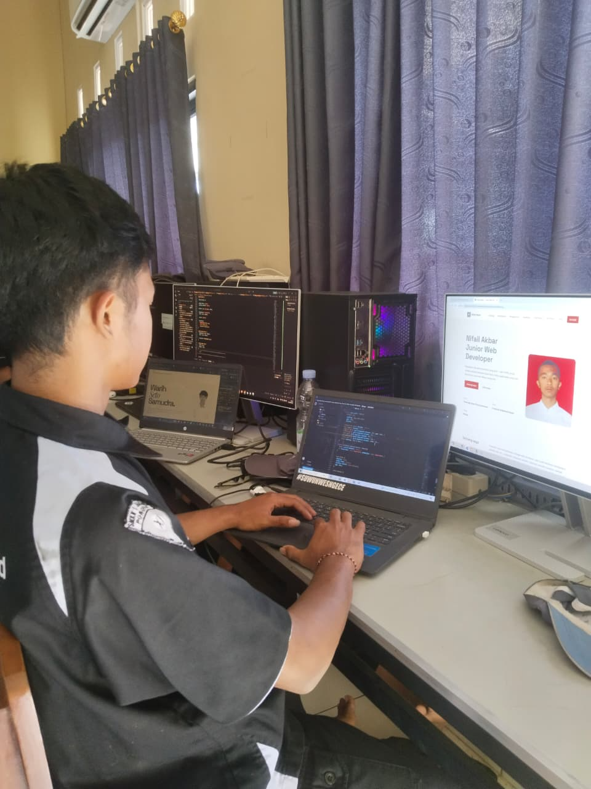
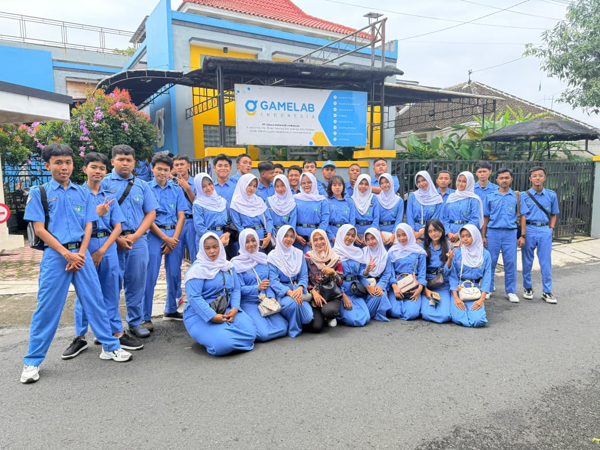

Batik Nusantara — Website Toko
Website dinamis toko batik: katalog, kategori, pencarian, keranjang, checkout, dan dashboard admin. Dibangun dengan PHP & MySQL.
Kunjungi website →Merapikan ide jadi antarmuka yang jalan — dari HTML statis sampai aplikasi berbasis basis data. Fokus pada kode yang rapi, terstruktur, dan enak dibaca orang lain.

Saya merupakan murid SMKN 1 JENANGAN yang masuk pada tahun pelajaran 2024/2025. Saya memutuskan untuk masuk di jurusan Rekayasa Perangkat Lunak (RPL) untuk memperdalam pengetahuan dan keterampilan di bidang teknologi informasi, khususnya dalam pengembangan perangkat lunak dan aplikasi.
Selama menempuh pendidikan di jurusan Rekayasa Perangkat Lunak, saya mempelajari berbagai hal yang berkaitan dengan pemrograman, pembuatan website, pengembangan aplikasi, pengelolaan basis data, serta penggunaan berbagai teknologi yang digunakan dalam dunia kerja. Melalui pembelajaran tersebut, saya berharap dapat meningkatkan kemampuan dan pengalaman yang nantinya dapat menjadi bekal untuk memasuki dunia kerja maupun melanjutkan pendidikan ke.
"Kode yang baik itu kode yang bisa dibaca ulang enam bulan kemudian tanpa perlu mengingat-ingat."
Pelajar
SMKN 1 JENANGAN
Frontend & Backend dasar
Merancang dan membangun website toko dinamis lengkap dengan katalog, keranjang, checkout, dan panel admin menggunakan PHP dan MySQL.
Mengerjakan serangkaian studi kasus antarmuka statis untuk melatih tata letak, responsivitas, dan aksesibilitas.
Website dinamis toko batik: katalog, kategori, pencarian, keranjang, checkout, dan dashboard admin. Dibangun dengan PHP & MySQL.
Kunjungi website →Website profil statis yang sedang Anda lihat — dibangun dengan HTML dan CSS murni, tanpa framework, dengan perhatian pada aksesibilitas dan responsivitas.
Lihat sumber →
Workshop pengembangan web profil pribadi.

kunjungan Industri di Gamelab Indonesia.
Praktik Kerja Lapangan (PKL) menjadi salah satu pengalaman yang berharga bagi saya sebagai siswa Rekayasa Perangkat Lunak. Melalui kegiatan ini, saya mendapatkan kesempatan untuk merasakan secara langsung bagaimana proses bekerja di lingkungan industri, khususnya dalam bidang pengembangan perangkat lunak. Saya melaksanakan kegiatan PKL di **SEJE DIGITAL**..
Baca selengkapnya →